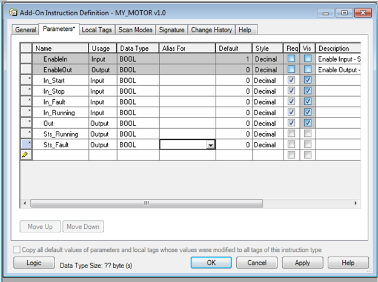
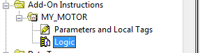

[Logix] Bài 13: Sử dụng Add On Instruction trong Rslogix 5000
Ngày đăng: 26/10/2012 — Cập nhật: 2025
Lợi ích của AOI
- Có thể sử dụng lại Code nhiều lần, lập trình nhanh hơn.
- Viết một lần, sử dụng cho nhiều dự án (Export/Import AOI).
- Chương trình dễ hiểu hơn, tổ chức thành các khối điều khiển.
- Dễ bảo trì chương trình, chỉnh sửa thuật toán tập trung.
- Bảo vệ tài sản trí tuệ, khóa mã nguồn AOI.
Các bước tạo AOI
Ví dụ minh họa một AOI đơn giản. Ban đầu có đoạn chương trình như sau:

Tạo New Add-On Instruction:

Nhập thông tin AOI:
- Tên AOI
- Type: Chọn ngôn ngữ (Ladder)

Khai báo các thông số:

- Parameter: Định nghĩa các thông số đầu vào/ra, kiểu dữ liệu, hiển thị khi gọi AOI.
- Local Tag: Tag nội bộ chỉ dùng trong AOI.
Sau khi chọn xong, Click OK. AOI được tạo như sau:

Double Click vào Logic để viết chương trình cho AOI:

Sử dụng AOI
Quay lại chương trình chính, trên thanh công cụ lệnh, Tab Add On sẽ có AOI vừa tạo:

Để sử dụng, tạo Rung mới và Click vào AOI, gán các thông số Input/Output:

Có thể viết ở ngôn ngữ Funtion Block Diagram (FBD):

Ghi chú
- AOI không cho phép chỉnh sửa Online.
- AOI có thể Export/Import vào các dự án khác nhau.
- Ngôn ngữ AOI: LD, FBD, ST (không có SFC).
Tài liệu tham khảo
Giap Van Vy – 2012
[Logix] Lesson 13: Using Add On Instruction in RSLogix 5000
Posted: 26/10/2012 — Updated: 2025
AOI Benefits
- Code reuse, faster programming.
- Write once, use in many projects (Export/Import AOI).
- Clearer program structure, easier maintenance.
- Intellectual property protection, lock AOI source code.
Steps to create AOI
Example: Simple AOI. Initial program:
Create New Add-On Instruction:
Enter AOI information:
- AOI name
- Type: Select language (Ladder)
Declare parameters:
- Parameter: Define input/output, data type, display when calling AOI.
- Local Tag: Internal tag only used in AOI.
Click OK. AOI created:
Double Click Logic to write AOI program:
Using AOI
Back to main program, Add On tab will have the new AOI:
To use, create new Rung and click AOI, assign Input/Output:
Can also use in Funtion Block Diagram (FBD):
Notes
- AOI cannot be edited Online.
- AOI can be Exported/Imported to other projects.
- AOI languages: LD, FBD, ST (no SFC).
Reference
Giap Van Vy – 2012